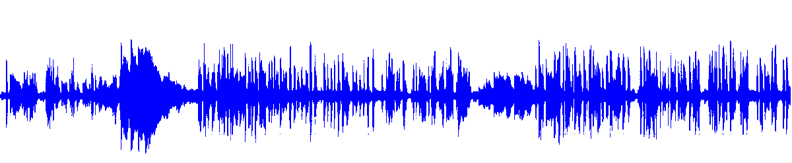

ViVoVAD: A Voice Activity Detection Tool Based on Recurrent Neural Networks  Voice Activity Detection (VAD) aims to distinguish correctly those audio segments containing human speech. Here is our latest approach to the VAD task relying on the modelling capabilities of Bidirectional Long Short Term Memory (BLSTM) layers to classify speech/non-speech frames of an audio signal.
VAD is broadly applied in different speech processing applications such as Automatic Speech Recognition (ASR), speaker identification or speech enchancement. A large number of different techniques have been proposed for this task, from unsupervised approaches based on energy
More recently, deep learning approaches have attracted great research interesest
Our proposed VAD system uses Bidirectional LSTMs as the main component of the system. The task is treated as a binary classifier, with our approach consisting of two different blocks: a first feature extraction step, and the RNN classifier. Both of them are described below:
The input features for the neural network consist of log Mel filter bank energies. Furthermore, the log energy of each frame can be also considered. Features are extracted every 10 ms using a 25 ms window. Feature mean and variance normalization is applied at file level.
The neural architecture proposed can be seen in the Figure below. As shown, it is mainly made of one or more stacked BLSTM layers. The final BLSTM layer output is then indepently classified by a linear layer sharing their weights for all time steps. In order to reduce the delay of the dependencies, training and evaluation is performed with limited length sequences of 300 frames (3 seconds). However, a VAD label is emited for every processed frame, which is equivalent to one label every 10 ms in our case.
Adaptative Moment Estimation (Adam) optimizer is chosen due to its fast convergence properties. Furthermore, an exponential decay learning rate is implemented to ensure smooth convergence. Data
will be shuffled in each training iteration aiming to improve model generalization capabilities. All the neural architectures have been evaluated using the PyTorch
The following lines show an experimental test of our VAD system on broadcast environment samples from Albayzin 2018 RTVE dataset. This architecture has been previously used in the framework of speaker diarization with good performance